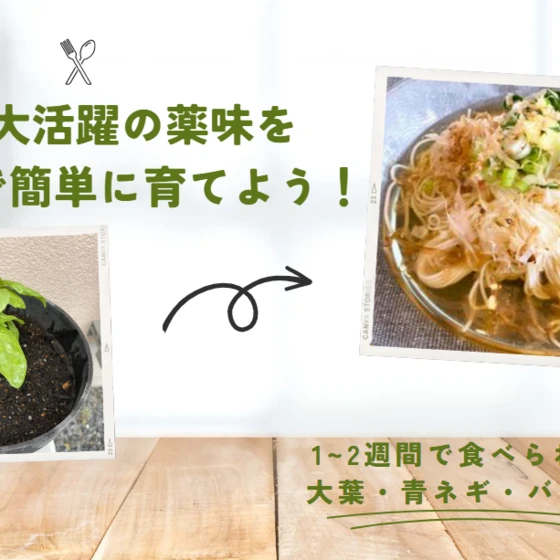
夏に大活躍の薬味をおうちで簡単に育てよう！1~2週間で食べられる大葉・青ネギ・バジル編
こんにちは。フジ創アイノスの稲葉 です。 そうめんやざるうどん、冷やし中華など、暑い日にぴったりの料理が食べたくなる夏。 そんなとき活躍するのが「薬味」です！ そこで、ちょっと欲しいときにすぐ収穫できる「薬味の家庭菜園」
続きを読む →FUJISOU AINOS JOURNAL
家づくりのこと、暮らしのこと。
日々の想いを、お伝えします。
社長ブログ 282件 ／ 新しい記事から 4・12ページ

こんにちは。フジ創アイノスの稲葉 です。 そうめんやざるうどん、冷やし中華など、暑い日にぴったりの料理が食べたくなる夏。 そんなとき活躍するのが「薬味」です！ そこで、ちょっと欲しいときにすぐ収穫できる「薬味の家庭菜園」
続きを読む →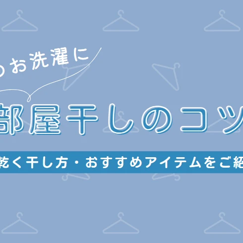
こんにちは！ 富山県で自然素材の家づくりをしているフジ創アイノスです。 梅雨関連情報を、ご紹介いたします。 雨の日が続く梅雨のお洗濯といえば、「部屋干し」。 部屋干しは天候に左右されず、好きな時間に洗濯物を干せて便利です
続きを読む →こんにちは、フジ創アイノスの稲葉 です！ 7月のイベントといえば七夕ですね ✨ そこで、今回はインテリアにも馴染む、おしゃれな七夕飾りの飾り方・作り方をご紹介します！ 七夕飾りには 「願い事」や「魔除け」 の意味が込めら
続きを読む →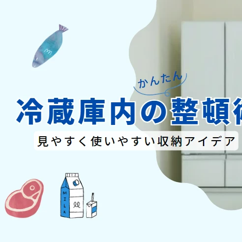
こんにちは！ フジ創アイノスの稲葉です。 スーパーでまとめ買いをして、冷蔵庫にとりあえず詰め込み、ふと気づくと、賞味期限が切れている食材が...。 急いでいる時に、欲しい食材がなかなか取り出せない...。 そんな冷蔵庫の
続きを読む →こんにちは。 富山県で自然素材の家づくりをしているフジ創アイノスです。 今日は、私がおすすめしたい記事をご紹介いたします。 インテリアに関する、情報です✨ この季節に旬を迎えるあじさいは、花びらが大きく、一輪刺しでも存在
続きを読む →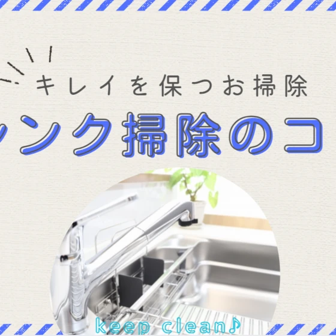
こんにちは！フジ創アイノスの稲葉 です。 『キレイを保つお掃除方法』、今回はキッチンの 「シンク周り」 です！ 食材のほか、調味料や油が付いた調理器具・お皿を洗い流すシンク。 雑菌の温床となりやすく、放っておくとカビや金
続きを読む →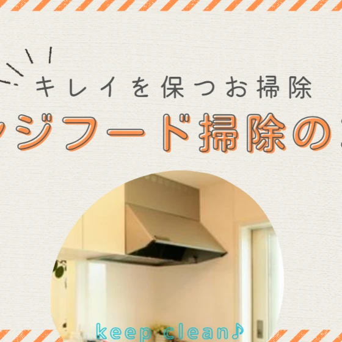
こんにちは！フジ創アイノスの稲葉です。 『キレイを保つお掃除方法シリーズ』、今回はレンジフード編です。 コンロの上部にあるレンジフードや換気扇。調理中の空気を外へ排出し、室内を嫌な臭いや油汚れから守ってくれる大事な存在。
続きを読む →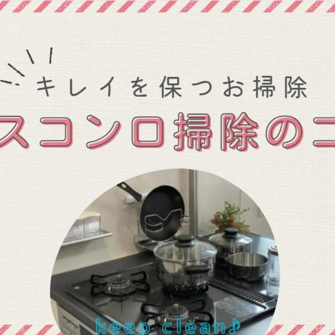
こんにちは！フジ創アイノスの稲葉です。 せっかくのマイホーム、居心地のよい空間にしたいと思う方も多いのではないで しょうか？ しかし、そのためのお掃除は意外と大変なものです。 そこで楽してキレイを保てるお掃除方法を場所別
続きを読む →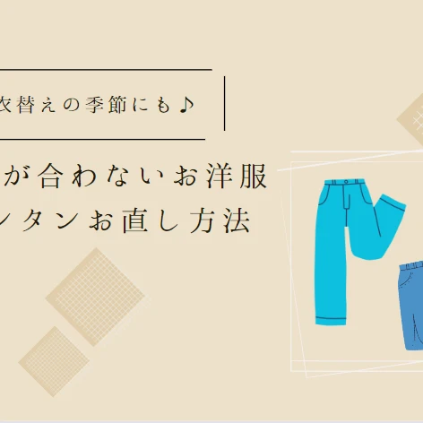
こんにちは！フジ創の稲葉です。 「子どもが成長し、去年の服が小さくなってしまった！」 「新しく買った服が少し大きいかも...！」 衣替えの季節にあるあるの 服のお悩み ですが、シンプルなパンツやスカートのサイズ直しなら自
続きを読む →こんにちは✨ 富山県で自然素材の家づくりをしている 「フジ創アイノス」です✨ ✨テーマ✨ 冬の花。ツバキ 心身ともに改まり、健やか１年を願う新たな年の始まりである１月は、本格的な寒さが始まる頃でもあります。 松竹梅をはじ
続きを読む →こんにちは✨ 富山県で自然素材で家づくりをしている 「フジ創アイノス」です。 テーマ☆ ・霜と植物の関係・ ナスタチウムは、まん丸い緑色の葉と黄色、オレンジの花色のコントラストが美しい一年草です。 初夏から秋遅くまで、と
続きを読む →こんにちは☆ 富山県で自然素材の家づくりをしている 「フジ創アイノス」です。 テーマ☆(おすすめ記事をご紹介いたします) 「寒中に咲く花々」 ・山々が赤や黄色に染まり、色とりどりの果実や種が実る彩りの秋を過ぎると、 景色
続きを読む →こんにちは✨ 富山県で自然素材の家づくりをしている 「フジ創アイノス」です。 ☆テーマ☆ 「熱容量」 ・地球温暖化や、脱炭素問題を解決するために、高断熱住宅が推奨 されています。 断熱性を高めれば、それだけ冬に熱が逃げて
続きを読む →こんにちは✨ 富山県で自然素材の家づくりをしている 「フジ創アイノス」です✨ 2024年もどうぞよろしくお願いいたします。 今年も、頑張っていきます。 ・テーマ・ 「家を建てる仕事」(おすすめ記事ご紹介いたします) ・家
続きを読む →こんにちは✨ 富山県で自然素材の家づくりをしている 「フジ創アイノス」です。 ☆テーマ☆ (おすすめ記事をご紹介いたします) 「日本の食事の風景」 ・日本の伝統的な食事の場は、膳によるものです。 基本的にはテーブルは用い
続きを読む →こんにちは✨ 富山県で自然素材の家づくりをしている 「フジ創アイノス」です。 ☆テーマ☆(おすすめ記事をご紹介いたします) 「家族力のバロメーター」 ・現代にも変わらず、食事をする場所としてのダイニングは、間違いなく家族
続きを読む →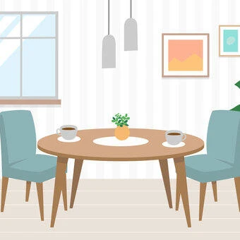
こんにちは✨ 富山県で自然素材の家づくりをしている 「フジ創アイノス」です。 ☆テーマ☆ 「ビックテーブル＆丸テーブル」(おすすめ記事ご紹介いたします) ・ダイニングが暮らしの中心となれば、ダイニングテーブルも、単に食事
続きを読む →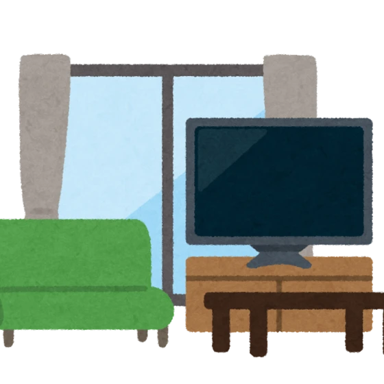
こんにちは✨ 富山県で自然素材の家づくりをしている 「フジ創アイノス」です。 ☆テーマ☆ 「リビングとダイニング」です。(おすすめ記事をご紹介いたします。 ・LDとして一体になっていれば、家族が集まる場所としての用途だけ
続きを読む →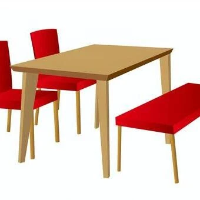
こんにちは✨ 富山県で自然素材の家づくりをしている 「フジ創アイノス」です。 テーマ☆ 「ドラマの中の風景」(おすすめ記事ご紹介) 新しい家を考えるとしたら、その家の中心をどの部屋にしますか？ または、、今の家で、家族の
続きを読む →こんにちは✨ 富山県で自然素材の家づくりをしている 「フジ創アイノス」です。 ☆テーマ☆(今日の気になる記事) 「囲炉裏大発明」 ・人間は火を使う唯一の動物である。火を扱うことで人間になってきたともいえます。 火との長い
続きを読む →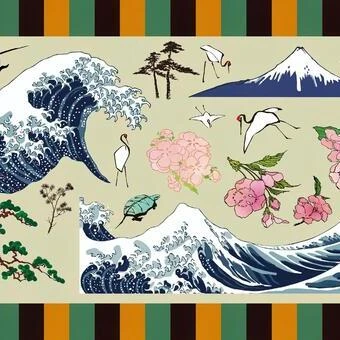
こんにちは✨ 富山県で自然素材の家づくりをしている 「フジ創アイノス」です。 ・テーマ・ 「絵を飾ること」 インテリアの楽しみのひとつに、リトグラフや絵画を飾ることがあります。 欧米の家では、家族の写真を壁面いっぱい飾っ
続きを読む →こんにちは✨ 富山県で自然素材の家づくりをしている 「フジ創アイノス」です。 ☆テーマ☆ ・自分の脳に聞いてみる・ 人間の脳は、文字に書かれたものや、相手が発声した言語を発してコミュニケーションをとることや、さまざまなシ
続きを読む →こんにちは✨ 富山県で自然素材の家づくりをしている 「フジ創アイノス」です。 ・テーマ・ ビバリーヒルズに。。 もし、ビバリーヒルズにマンションが建てばどうなるでしょう・・ もちろん同じマルチファミリー用住宅であるアパー
続きを読む →こんにちは✨ 富山県で自然素材の家づくりをしている 「フジ創アイノス」です。 ・テーマ・ [建物と土地は一体のもの] その意味では、そもそも不動産に対する評価や考え方から日本とは違います。 日本では、既存住宅の価格を査定
続きを読む →